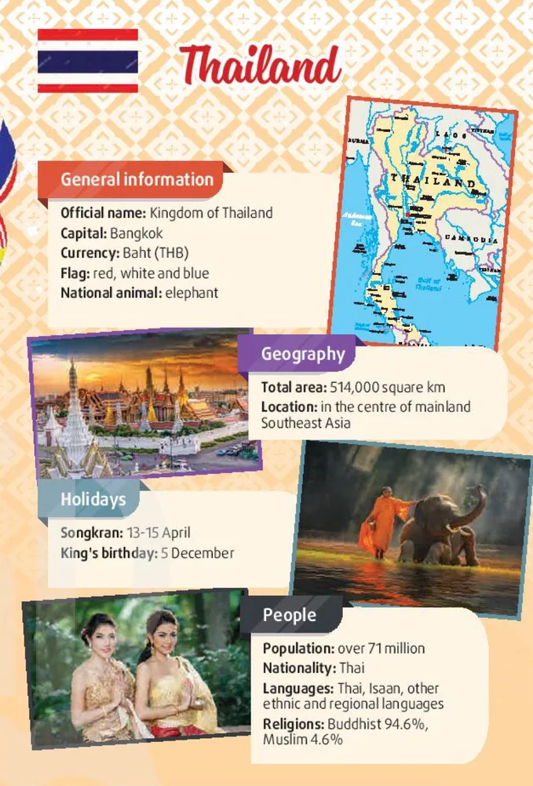

Looking back & Project
Lesson 8 — The colours of ASEAN
4Four stops in 45 minutes
- 🧩
Odd one out
Warm-up
5 min - 🔁
Looking back
Sounds · words · grammar
12 min - 🌏
Project
The colours of ASEAN
25 min - ✅
Wrap-up
Now I can…
3 min
Warm-up
Odd one out — ASEAN
5 minutesQuestions 1–3
1. A. Viet Nam · B. the Netherlands · C. Laos · D. Brunei B — not an ASEAN member
2. A. Bangkok · B. Manila · C. Washington · D. Naypyidaw C — not in Southeast Asia
3. A. the US dollar · B. the baht · C. the ringgit · D. the đồng A — not an ASEAN currency
Questions 4–6
4. A. Indonesian · B. Thailand · C. English · D. Malay B — a country, not a language
5. A. Cambodia · B. the USA · C. Myanmar · D. the Philippines B — not in Southeast Asia
6. A. Phnom Penh · B. Vientiane · C. Tokyo · D. Jakarta C — not an ASEAN capital
Looking back
Pronunciation · vocabulary · grammar
12 minutesThen practise saying the sentences in pairs
1. There are no correct answers on her test paper. c(o)rrect
2. He’s going to fly to Bangkok tonight. t(o)night
3. The participants were probably excited about the palace history. prob(a)bly · hist(o)ry
4. I believe that members expressed different opinions about the issue. b(e)lieve · diff(e)rent
Words you have learnt in this unit
1. Talking to the young volunteers was an eye-opening / a live-streamed experience. an eye-opening
2. Mark was awarded for his contribute / contribution to promoting traditional music. contribution
3. You need to have strong leader / leadership skills to manage the project. leadership
4. This programme tries to encourage culture / cultural exchanges among ASEAN countries. cultural
Gerunds
1. This conference focused on discuss local and regional issues. discuss → discussing
2. Organise the ASEAN workshop was harder than I expected. Organise → Organising
3. His job involves to translate documents about ASEAN events. to translate → translating
4. I am thinking of participate in a youth competition. participate → participating
Project
The colours of ASEAN
25 minutesPresent an ASEAN member country

📋 General information: name, capital, currency, flag, national animal / flower
🗺️ Geography: area, location
🎉 Holidays · 👥 People: population, culture, languages, religions
Listen, evaluate and vote
- 🎤
Presenters
One member stands by the poster and answers questions.
- 📝
Audience
Tick the checklist. Ask one question.
- 🏆
Vote
The most colourful country · the best presentation.
Tick ✓, ✓✓ or ✓✓✓
- elision of vowels
- ASEAN words
- gerunds
- read ASEAN news
- give opinions
- listen to a conversation
- write a proposal
- give compliments
- New Year in ASEAN
- present an ASEAN country
Homework
1. Do the Looking back exercises in the workbook.
2. Improve your project with your classmates’ feedback.
3. Get ready for Unit 5 — Global Warming.